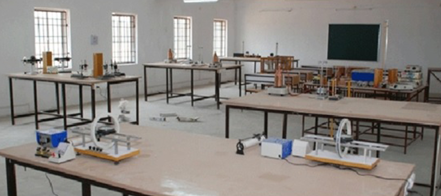

Chemistry Lab:
One of the basic unit of school is chemistry laboratory. Our Labs have fully equipped equipments with highly qualified chemicals. To maintain the safety of children we are assuring A++ security medical equipment and well maintained faculty for group researches. we encourage our students to develop more practical skills than theoritical.
Physics lab:
physics students learn to practice the activities of scientists - asking questions, performing procedures, collecting data, analyzing data, answering questions, and thinking of new questions to explore.
physics students learn to practice the activities of scientists - asking questions, performing procedures, collecting data, analyzing data, answering questions, and thinking of new questions to explore.
